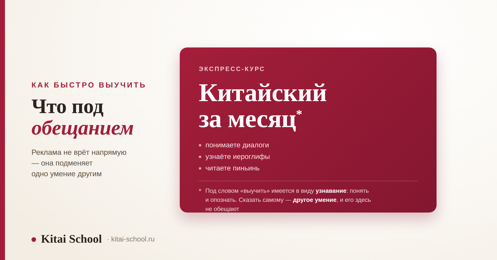
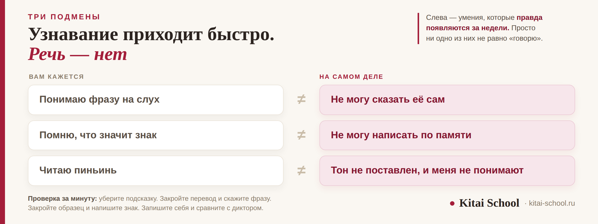

Китайский язык
Как быстро выучить китайский: что стоит за обещаниями экспресс-курсов


Обычно на этот вопрос отвечают сроком: столько-то месяцев, столько-то часов. Но у нас есть два отдельных разбора со сроками, и повторять их тут незачем — ссылки ниже. Здесь про другое. Слово «быстро» в рекламе обычно означает не скорость, а подмену. Человеку обещают, что он заговорит, а дают умение узнавать: понимать знакомую фразу, опознавать знакомый знак, читать пиньинь. Это настоящие умения, и появляются они действительно быстро. Просто ни одно из них не равно «говорю». Разберём, как устроена эта подмена, что ускоряет старт на самом деле и чего ускорить нельзя.
Узнавание приходит быстро, воспроизведение — нет. Обещание «язык за месяц» продаёт первое, а человек слышит второе. Три подмены: понимаю на слух вместо могу сказать; помню значение знака вместо могу написать; читаю пиньинь вместо тон поставлен. Ускорить можно ровно одно — не делать работу дважды: тоны сразу, слова вместо отдельных знаков, проверка без подсказок. Слух, автоматизм и борьба с забыванием деньгами не сжимаются.
Что именно продают под словом «быстро»
Разберём обещание по частям, потому что врут в нём редко. Чаще всего каждое слово по отдельности правда, а вместе получается не то, что человек услышал.
Правда в том, что старт в китайском действительно быстрый. В языке нет падежей, родов и спряжений: слово не меняет форму, и первые фразы собираются легче, чем в европейских языках. Через пару недель занятий человек понимает простые реплики и узнаёт знакомые знаки в тексте. Ощущение быстрого движения настоящее, и на нём держится всё остальное обещание.
Подменено в нём одно слово — «знаю». Курс показывает результат так: вот фраза, вы её понимаете. Вот знак, вы помните, что он значит. Вот пиньинь, вы его читаете. Всё верно — и всё это проверка узнаванием. А человек под словом «знаю» имеет в виду совсем другое: что он сможет это сказать сам, без подсказки, когда понадобится.
Отсюда и ощущение обмана, которое приходит позже. Человек не разучился тому, чему научился: он по-прежнему понимает и узнаёт. Просто в момент, когда надо открыть рот, выясняется, что этого умения у него не было вообще — его не обещали и не проверяли.
И честная оговорка сразу. Интенсив сам по себе не плох. Заниматься помногу и часто — нормально, и результат от этого действительно выше. Плохо другое: когда внутри интенсива вся работа идёт на узнавание. Тогда вы быстро двигаетесь в ту сторону, в которую не собирались.
Про сроки и цифры у нас есть два подробных разбора, и здесь мы их не дублируем: сколько примерно часов уходит на каждую ступень — в статье про то, за какое время реально выучить китайский; сроки по уровням и что за ними стоит — в разборе про то, за сколько выучить китайский с нуля. Что именно проверяет экзамен и как он устроен — в статье про сертификат HSK.
Три подмены, из-за которых кажется, что вы уже говорите
Они устроены одинаково: слева стоит умение, которое у вас правда появилось, справа — то, которое вы себе приписали. Разница между колонками и есть расстояние, которое ещё предстоит пройти.
| Вам кажется | На самом деле | Как проверить за минуту |
|---|---|---|
| Понимаю фразу на слух | не могу сказать её сам | закройте перевод и произнесите фразу вслух по-китайски |
| Помню, что значит знак | не могу написать его по памяти | закройте образец и напишите знак на бумаге |
| Читаю пиньинь | тон не поставлен, и меня не понимают | запишите себя на телефон и сравните с записью диктора |
Первая подмена самая частая. Понимание на слух приходит раньше речи у всех и во всех языках — это нормальный порядок, а не ваша особенность. Проблема начинается там, где понимание засчитывают за результат и перестают тренировать речь. Тогда разрыв между колонками растёт, а не сокращается.

Вторая касается иероглифов. Узнать знак в тексте и написать его по памяти — разные навыки, и второй требует заметно больше работы. Почему знаки забываются и что с этим делать, разобрано у нас отдельно, в статье про то, как запоминать иероглифы.
Третья самая дорогая. Пиньинь — это запись латиницей, и читать её легко. Но сам по себе он не даёт тона, а без тона слово звучит не тем словом. Человек уверенно произносит слог, не попадает в тон и не понимает, почему на него смотрят с недоумением.
Общее у всех трёх — способ проверки. Узнавание проверяют подсказкой, воспроизведение — её отсутствием. Любое задание, где есть варианты ответа, проверяет первое. Это не делает такие задания бесполезными: они хорошо держат регулярность. Просто по ним нельзя судить о том, заговорите вы или нет.
Что действительно ускоряет старт: не темп, а отсутствие переучивания
Самая большая потеря времени в языке — не медленный темп, а работа, сделанная дважды. Вот четыре вещи, которые экономят больше всего.
| Что сделать | Что это экономит |
|---|---|
| Поставить тоны с первых недель | переучивание всего словаря, набранного в неверном звучании |
| Учить слова и сочетания, а не отдельные знаки | повторный заход на ту же лексику, когда знаки по одному не складываются в речь |
| Проверять себя без подсказок | месяцы движения в сторону, о которой вы не знали |
| Получать обратную связь рано | исправление ошибки, пока она не закрепилась |
Ко мне пришёл человек после трёхмесячного интенсива в другом месте. Он был доволен: понимал диалоги из учебника, узнавал знаки, читал пиньинь с листа. Пришёл, по его словам, «чуть-чуть подтянуть разговорную часть».
На первом занятии я попросила его рассказать о себе. Три фразы. Он не смог собрать ни одной — все нужные слова он знал, но доставал их только тогда, когда видел перед глазами.
Мы не начинали заново: узнавание никуда не делось и очень пригодилось. Но два месяца ушло на то, чтобы перевести знакомое в говоримое, и ещё какое-то время — на тоны, которые за три месяца успели закрепиться неверно. Обманули ли его? Формально нет. Ему показывали ровно то, чему учили.
Первая строка перевешивает остальные три. Пока тон не поставлен, каждое новое слово запоминается в неверном звучании — и потом переучивать придётся не один звук, а весь накопленный словарь. Это та самая работа, которую можно было не делать вовсе. Как ставят и правят звучание, разобрано в статье про корректировку произношения.
Четвёртая строка про то, почему ошибку дешевле поймать рано. Пока навык не закрепился, его правят за одно занятие. Закрепившийся навык правят неделями, и всё это время он вам мешает. Вот почему обратная связь на старте стоит дороже, чем на любом другом этапе, — и вот почему самостоятельное изучение чаще идёт тяжелее именно в первые месяцы.
И то, чего в этом списке намеренно нет. Здесь нет слова «больше». Заниматься больше — полезно, но это не приём, а ресурс: он есть или его нет. А перечисленные четыре вещи не требуют лишнего времени вообще, они требуют другого способа тратить то же самое.
Чего ускорить нельзя ни за какие деньги
Эту часть в рекламе не показывают, а она есть у всех и не зависит ни от способностей, ни от вложенных денег.
Слух на тоны. Ухо, выросшее на языке без смыслоразличительных тонов, поначалу просто не слышит разницы. Не «плохо слышит», а не различает вовсе — как не различают оттенки в незнакомой области. Это проходит, но проходит временем: нужно много раз услышать одно и то же в разных контекстах. Сократить это нельзя, можно только начать раньше.
Автоматизм. Между «помню правило» и «говорю не задумываясь» нужно определённое число повторений, и оно не сжимается длиной занятия. Четыре часа подряд не заменяют четыре подхода в разные дни: память устроена так, что ей нужны промежутки. Поэтому короткие регулярные подходы обгоняют редкие длинные — не потому что так приятнее, а потому что иначе не работает.
Забывание. Выученное уходит, и это не лень и не возраст. Любой набранный объём приходится поддерживать, иначе он уменьшается. Значит, часть каждой недели всегда уходит на возврат к старому, и заложить эту часть надо сразу — иначе она проявится сама, в виде ощущения, что вы стоите на месте.
Как выглядит честная интенсивная неделя
Интенсив работает, если внутри него есть все пять элементов. Уберите любой — и скорость упадёт, сколько бы часов вы ни вложили.
| Элемент | Что это значит |
|---|---|
| Новое | небольшая порция новой лексики и грамматики — меньше, чем хочется |
| Возврат | повторение того, что учили раньше; без этого объём сокращается |
| Голос | проговаривание вслух каждый раз, а не молчаливое чтение |
| Слушание | живая речь в наушниках, даже если понятно не всё |
| Применение | сказать или написать что-то своё живому человеку |
Чаще всего выпадают два последних. Слушание кажется необязательным, пока понятно мало, а применение откладывают до момента, когда «будет что сказать». В результате человек набирает материал, который никогда не выходит наружу, — и удивляется, что не говорит.
Про порядок, в котором всё это осваивают, у нас есть отдельная карта — она полезнее любого расписания, потому что объясняет, почему шаги идут именно так. Смотрите разбор про этапы изучения китайского. А что делать в самом начале, когда непонятно вообще ничего, разобрано в статье про изучение китайского с нуля.
И мерка, по которой удобно проверять свой интенсив. Если за неделю вы ни разу не сказали ничего своего, это была не интенсивная неделя, а плотное чтение. Полезное занятие, но другое, и скорость речи оно почти не повышает.
Что мы здесь не пересказываем
Про скорость и сроки у нас написано много, и эта статья закрывает только одну часть вопроса — про подмену. Остальное разобрано отдельно и подробнее.
| Ваш вопрос | Где разобрано |
|---|---|
| Сколько часов уходит на каждую ступень | за какое время реально выучить китайский |
| Сроки по уровням и что за ними стоит | за сколько выучить китайский с нуля |
| Где в китайском тяжелее всего и почему кажется, что застрял | сложно ли учить китайский с нуля |
| В каком порядке осваивать язык | этапы изучения китайского |
| Почему забываются иероглифы | как запоминать иероглифы |
| Как ставят и правят произношение | корректировка произношения |
И главное, ради чего всё это собиралось. Вопрос «как быстро» стоит заменить на вопрос «как без переделок». Разница в том, что первый вы не контролируете — скорость зависит от времени, которое у вас есть, — а второй контролируете полностью. Поставленные сразу тоны, слова вместо отдельных знаков и честная проверка без подсказок экономят больше, чем любой интенсив.
Частые вопросы (FAQ)
Можно ли выучить китайский за месяц?
За месяц можно научиться узнавать: понимать простые фразы на слух, опознавать знакомые знаки, читать пиньинь. Это настоящие умения, и они действительно появляются быстро. Но говорить самому — другое дело, и этого за месяц не происходит. Обещание не врёт напрямую: оно подменяет одно умение другим, а человек слышит то, что хочет услышать.
Как быстро выучить китайский с нуля?
Быстрее всего идёт тот, кто не переучивается. Три вещи экономят больше всего: ставить тоны с первых недель, а не «потом»; учить слова и сочетания, а не отдельные иероглифы; проверять себя воспроизведением, а не узнаванием. Это не про темп занятий — это про то, чтобы не делать одну и ту же работу дважды.
Что быстрее всего даёт результат на старте?
Произношение. Если звук и тон поставлены сразу, дальше всё идёт заметно легче: вас понимают, вы не боитесь говорить, и не приходится возвращаться и переучивать. А исправлять закрепившийся неверный тон долго и неприятно — это та работа, которую можно было не делать вовсе.
Правда ли, что тоны можно поставить потом?
Можно, но это самый дорогой вариант из всех. Пока тон не поставлен, каждое новое слово вы запоминаете в неверном звучании, и потом переучивать придётся не один тон, а весь накопленный словарь. Чем раньше поправят — тем дешевле обойдётся.
Помогают ли приложения ускорить обучение?
Помогают в одном: держат регулярность и не дают забыть выученное. Но почти все они проверяют узнаванием — показывают варианты, из которых надо выбрать. Это удобно и приятно, и именно поэтому создаёт ощущение прогресса, которого может не быть. Добавляйте к ним проверку без подсказок: сказать или написать самому.
Как понять, что прогресс настоящий, а не кажущийся?
Проверить себя без подсказок. Закройте перевод и скажите фразу вслух. Закройте образец и напишите знак по памяти. Попробуйте объяснить мысль своими словами, а не вспомнить готовую фразу. Если получается — прогресс настоящий. Если нет, вы пока умеете узнавать, и это тоже нормально, просто это другой этап.
Хотите проверить, где вы на самом деле? На диагностическом занятии посмотрим не узнавание, а речь: что получается сказать без подсказок. Оставить заявку или написать в Telegram.
Дальше по теме: часы по ступеням — за какое время реально выучить китайский; сроки по уровням — за сколько выучить китайский с нуля; что реально трудно — сложно ли учить китайский с нуля; порядок освоения — этапы изучения китайского; первые шаги — изучение китайского с нуля; иероглифы — как запоминать иероглифы; произношение — корректировка произношения; разговорная практика — курс по разговорной речи; экзамен — сертификат HSK и HSK 1; занятия для взрослых — курсы китайского для взрослых.
Источники
- Практика Kitai School — что студенты умеют на самом деле в момент, когда считают, что уже говорят.
- Наблюдения за теми, кто приходил после ускоренных курсов, и за тем, сколько занимает перевод узнавания в речь.
- Типичная картина, а не строгое правило: скорость на старте у всех разная и зависит от опыта с другими языками, от времени и от того, как устроены занятия.
Пусть учится не быстро, а без переделок! 慢慢来！